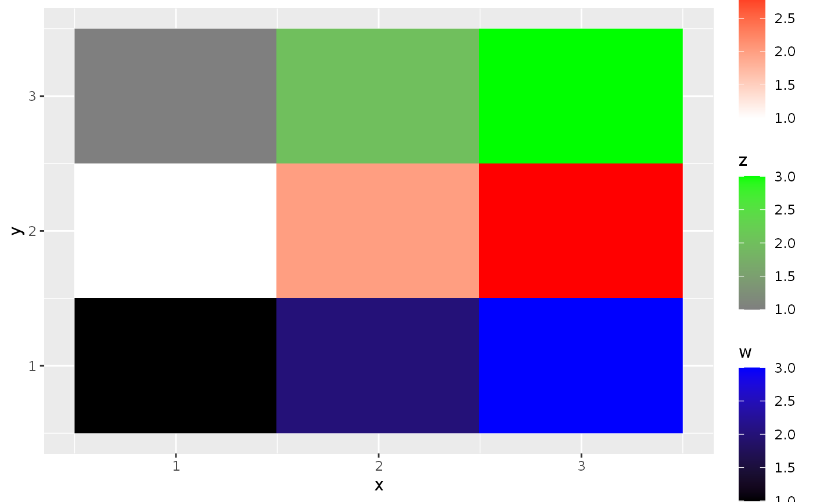

Maps multiple aesthetics to multiple colour fill gradient
scales. It takes in listed arguments for each aesthetic and disseminates
these to continuous_scale.
scale_fill_multi( ..., colours, values = NULL, na.value = "transparent", guide = "colourbar", aesthetics = "fill", colors ) scale_colour_multi( ..., colours, values = NULL, na.value = "transparent", guide = "colourbar", aesthetics = "colour", colors )
| ..., colours, values, na.value, guide, colors | listed arguments in
|
|---|---|
| aesthetics | a |
A nested list-like structure of the class MultiScale.
This function should only be called after all layers that this function affects are added to the plot.
The list elements of the listed arguments are assumed to follow the
aesthetics order, i.e. the nth list element belongs to the nth
aesthetic. When there are more list elements than n aesthetics, only the
first nth list elements are taken. When there are more aesthetics
than list elements, the first list element is used for the remaining
aesthethics.
In contrast to other scale_*_continous-family functions, the
guide argument is interpreted before adding it to the plot instead
of at the time of plot building. This behaviour ensures that the
available_aes argument of the guides are set correctly, but may
interfere with the guides function.
# Setup dummy data df <- rbind(data.frame(x = 1:3, y = 1, v = NA, w = 1:3, z = NA), data.frame(x = 1:3, y = 2, v = 1:3, w = NA, z = NA), data.frame(x = 1:3, y = 3, v = NA, w = NA, z = 1:3)) ggplot(df, aes(x, y)) + geom_raster(aes(fill1 = v)) + geom_raster(aes(fill2 = w)) + geom_raster(aes(fill3 = z)) + scale_fill_multi(aesthetics = c("fill1", "fill2", "fill3"), colours = list(c("white", "red"), c("black", "blue"), c("grey50", "green")))#> Warning: Ignoring unknown aesthetics: fill1#> Warning: Ignoring unknown aesthetics: fill2#> Warning: Ignoring unknown aesthetics: fill3